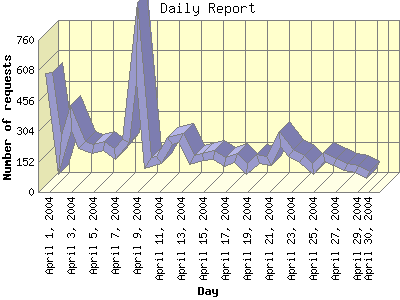

Report generated by Analog 5.91beta1 and Report Magic 2.21
|
Web Server Statistics for "Harish Narayanan (hnarayan) - April 2004" Report generated by Analog 5.91beta1 and Report Magic 2.21 |
The Daily Report identifies the activity for each day within the reporting period. Remember that one page hit can result in several server requests as the images for each page are loaded.

| Day | Number of requests | Number of bytes transferred | Percentage of the bytes | Percentage of the requests | |
|---|---|---|---|---|---|
| 1. | April 1, 2004 | 597 | 14.835 MB | 7.63% | 9.12% |
| 2. | April 2, 2004 | 187 | 6.555 MB | 3.37% | 2.86% |
| 3. | April 3, 2004 | 372 | 10.260 MB | 5.28% | 5.68% |
| 4. | April 4, 2004 | 237 | 5.689 MB | 2.93% | 3.62% |
| 5. | April 5, 2004 | 214 | 3.108 MB | 1.60% | 3.27% |
| 6. | April 6, 2004 | 232 | 6.759 MB | 3.48% | 3.54% |
| 7. | April 7, 2004 | 192 | 5.855 MB | 3.01% | 2.93% |
| 8. | April 8, 2004 | 257 | 5.979 MB | 3.08% | 3.93% |
| 9. | April 9, 2004 | 750 | 15.422 MB | 7.93% | 11.46% |
| 10. | April 10, 2004 | 147 | 6.353 MB | 3.27% | 2.25% |
| 11. | April 11, 2004 | 162 | 10.853 MB | 5.58% | 2.48% |
| 12. | April 12, 2004 | 256 | 5.857 MB | 3.01% | 3.91% |
| 13. | April 13, 2004 | 271 | 9.426 MB | 4.85% | 4.14% |
| 14. | April 14, 2004 | 161 | 9.597 MB | 4.94% | 2.46% |
| 15. | April 15, 2004 | 176 | 5.467 MB | 2.81% | 2.69% |
| 16. | April 16, 2004 | 183 | 9.103 MB | 4.68% | 2.80% |
| 17. | April 17, 2004 | 152 | 1.905 MB | 0.98% | 2.32% |
| 18. | April 18, 2004 | 168 | 9.532 MB | 4.90% | 2.57% |
| 19. | April 19, 2004 | 116 | 3.395 MB | 1.75% | 1.77% |
| 20. | April 20, 2004 | 164 | 2.851 MB | 1.47% | 2.51% |
| 21. | April 21, 2004 | 153 | 4.145 MB | 2.13% | 2.34% |
| 22. | April 22, 2004 | 267 | 8.614 MB | 4.43% | 4.08% |
| 23. | April 23, 2004 | 195 | 4.027 MB | 2.07% | 2.98% |
| 24. | April 24, 2004 | 166 | 3.741 MB | 1.93% | 2.54% |
| 25. | April 25, 2004 | 116 | 3.149 MB | 1.62% | 1.77% |
| 26. | April 26, 2004 | 175 | 6.321 MB | 3.25% | 2.67% |
| 27. | April 27, 2004 | 151 | 3.455 MB | 1.78% | 2.31% |
| 28. | April 28, 2004 | 126 | 4.501 MB | 2.32% | 1.93% |
| 29. | April 29, 2004 | 115 | 4.459 MB | 2.29% | 1.76% |
| 30. | April 30, 2004 | 87 | 3.151 MB | 1.62% | 1.33% |
Most active day April 1, 2004 : 195 pages sent. 750 requests handled. 16,171,023.00 served.
Daily average: 218 requests handled. 6.479 MB served.
This report was generated on August 5, 2004 15:47.
Report time frame April 1, 2004 00:12 to April 30, 2004 23:20.
| Web statistics report produced by: | |
 Analog 5.91beta1 Analog 5.91beta1 |  Report Magic 2.21 Report Magic 2.21 |